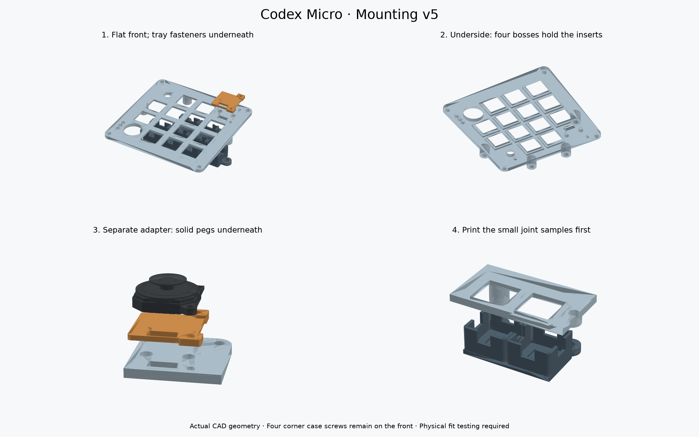

Hidden tray screws.
A removable joystick mount.
Mounting v5 puts the light-tray screws underneath the keyboard. The joystick sits on its own small adapter, located by two pegs. The front plate keeps its four corner case screws; the joystick’s two mounting-tab screws remain at the joystick.
1. Tray screws point upward
Four bosses—the thickened posts that hold the inserts—are now on the underside of the upper plate. The lower tray has short mounting shelves and clearance holes.
↑ M3 × 8 screw threads
Lower tray
↑ Screw head underneath
2. Joystick screws point downward
The top plate is flat around the joystick. The adapter carries the raised tab supports. Its two solid locating pegs fit two holes in the plate; the screws clamp everything together.
Joystick mounting tab
Removable adapter + pegs
Top plate
Exposed M1.6 nut underneath
CAD checks pass, but this revision has not been physically tested. The samples are cut from the actual full-size models. The adapter you test can be reused in the finished keyboard.
Download only the four test STLs ↓1. Upper tray-joint sample · 2. Lower tray-joint sample
3. Joystick corner sample · 4. Joystick adapter
Both full plates change in v5. Earlier upper and lower plates are not the matching pair for this design. Keep your case, switches, lights and wiring.
See how it assembles
Drag to rotate, scroll to zoom, and click a part for an explanation. The slider separates the layers; it does not represent the screw-tightening motion.
Light blue: upper plate · dark gray: light tray · orange: joystick adapter · gold: inserts.
Actual exported geometry. The inserts move with the upper plate because that is where they stay installed. The case, switches, keycaps, LEDs and wiring are hidden in this view. The joystick is a community reference model; confirm travel with your actual part.

Hardware
| Use | Hardware | Small test / finished assembly |
|---|---|---|
| Lower tray | Existing M3 × 8 mm socket-head screws | 2 / 4. Heads underneath; reuse test screws. |
| Upper plate bosses | Existing M3 × 4 mm heat-set inserts, 4.2 mm outside diameter | 2 / 4. Test inserts remain in the sample; use spares for the full plate. |
| Joystick | 2 × M1.6 × 10 mm DIN 912 socket-head screws | 2 / 2. Longer than the previous 8 mm screws. Use a 1.5 mm hex key. Check seller availability. |
| Under joystick | Existing M1.6 nuts, 3.2 mm across flats, 1.3 mm thick | 2 / 2. Exposed and accessible with small pliers; no nut box. |
All screw lengths are measured under the head. No new joystick or new type of M3 hardware is needed. The finished keyboard still uses ten M3 inserts across the case, foot and tray; allow two extra for the tray-joint test. Check that your actual hardware matches before heating or tightening.
Print orientation
- Upper joint sample, joystick corner and full upper plate: supplied visible face DOWN, bosses UP. White or clear PETG. Supports off; inspect the slicer around the switch retaining recesses.
- Lower sample and full light tray: black PETG, flat floor DOWN and cups UP. Supports off. The 10 × 4 mm LED access slots are unchanged.
- Joystick adapter: PETG, supplied pegs DOWN and ear seats UP. Enable support under the flat base between the pegs; keep support out of the holes and off the upper seating surfaces. Remove it carefully so the underside sits flat. Its base is 1.6 mm thick.
- Starting settings: 100% scale, 0.4 mm nozzle, 0.10 mm layers for the adapter/corner; 0.15 mm layers for tray parts. Four walls and solid small samples. Check every hole and support region in the slicer preview.
Test the hidden tray joint
- Print the upper and lower joint samples. Disconnect USB and keep electronics out while fitting hardware. Slide them together dry; the cup rims meet the underside of the upper sample and the mounting shelves meet the bottoms of its bosses.
- Install inserts in the UPPER sample. Place the upper sample visible face down, with its two bosses pointing up. Use a suitable heat-set tip to press each insert into a 3.9 mm pilot until flush with the end of the boss. Do not press it deeper. Let it cool completely before fitting a screw.
- Join the layers from underneath. Put the lower sample against the upper sample. Insert two M3 × 8 screws upward through the lower shelves into the inserts. Finger-start them and tighten gently with a 2.5 mm hex key. They should clamp without bottoming out, spinning an insert or bowing the plate.
- Try your real switch, cap and wired LED. With the upper sample off, feed the LED edge-first through its floor slot, then turn it flat into its seat. Check the real solder and wires clear. Reattach the upper piece and check key travel, light isolation, and access to both screws.
- Undo and redo the joint a few times. It should remain snug without cracks or a loose insert. The lower tray needs wire slack to drop away when removed. The case must be open to reach these underside screws.
Test the removable joystick adapter
- Print the corner sample and adapter. Remove the adapter’s underside supports. Seat its two pegs in the two larger holes. Its flat underside should rest fully on the top plate without rocking. Do not force the pegs; adjust the fit before printing a whole plate.
- Orient the joystick. With the keyboard viewed from above, the two mounting ears face the outer/right edge. The four solder pads face the bottom edge, toward the keys below. Their wire opening aligns through both printed pieces.
- Set the joystick on the adapter. Its fixed housing sits on the flat base; both tabs rest on their raised seats. The supports are 0.5 mm and 1.0 mm above the base, using the previous shim heights. A tab must not need to bend to reach its seat.
- Fit the two M1.6 × 10 screws downward. Each passes through a joystick tab, adapter and top plate. Fit an exposed M1.6 nut underneath. Hold the nut with small pliers and tighten only enough to stop movement. No box, twisting nut trap or glue.
- Check full travel before committing. Slide the thumb control in every direction and fit the neighboring keycaps. Check clearance for your thumb, wires and the 1.6–2.1 mm screw tips below the nuts. If a seat has a gap or the joystick binds, adjust the small adapter first.
The pegs provide alignment; the screws provide clamping. You can remove or revise the adapter without redesigning the top plate, provided its peg and screw locations stay the same.
Full-size files — after both tests pass
Print a new matching upper plate and lower tray. Keep the tested adapter. Switches soldered into an older plate may need desoldering before transferring them; dry-fit this revision before wiring the full switch matrix.
Upper plate STL — WAIT ↓Lower tray STL — WAIT ↓
Upper STEP · Lower STEP · Adapter STEP
Dimensions and verification limits
The M3 joint has 3 mm of lower-tray grip, 4 mm of nominal insert engagement, and 1 mm of screw-tip clearance. Bosses are 8 mm in diameter and extend 9 mm below the plate. The insert pilot is 3.9 mm × 4.3 mm; its fit depends on your printer and material.
The adapter uses 3.6 mm solid pegs, 2 mm long, in 4.0 mm plate holes. Its two screw holes are 2.4 mm clearance holes accommodating the two documented joystick hole layouts. The community joystick model is not a controlled manufacturer drawing.
Checks cover valid single-solid STEP geometry, watertight STL meshes, modeled case/electronics clearances, screw paths and lengths, nut bearing areas and preserved switch geometry. Actual print fit, heat-set pullout, repeated use, solder/wire clearance and full joystick travel remain unverified. This is a fit-test release.
Complete v5 STEP/STL/source kit ↓ · Reference assembly STEP — do not print ↓
The main site’s original exploded keyboard animation shows older mechanical parts. Use this v5 assembly view and matching v5 files for the new mounts.